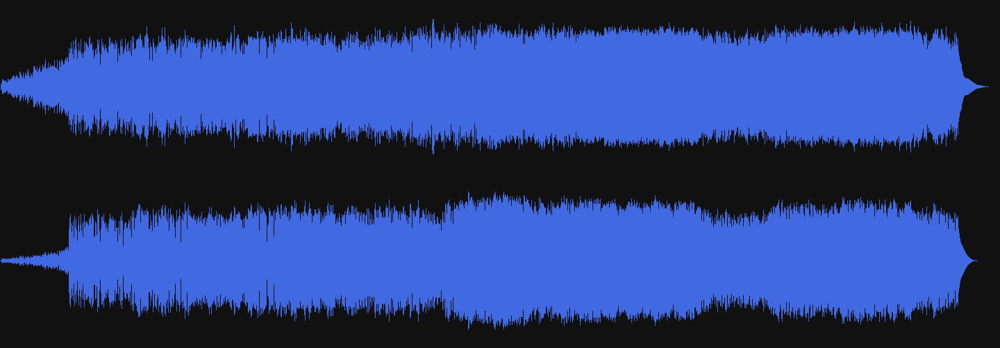

Никита Дубко, HR-Tech@Яндекс
Никита Дубко, HR-Tech@Яндекс
Я вижу, где смеётся Маша.
Вадим Макеев
Автор не имеет докторской степени по физике звука. Дальнейшие объяснения основаны на собственном опыте и активном гуглении. Если вы считаете, что автор не прав, не стесняйтесь вступать в дискуссии после доклада. Если это кто-то читает, то вот вам интересный факт: шум моря, который мы слышим через морскую раковину, на самом всего лишь звук крови, протекающей по нашим сосудам.
Любую функцию F(t), состоящую из частот от 0 до f1, можно непрерывно передавать с любой точностью при помощи чисел, следующих друг за другом через 1/(2f1) секунд
const audioCtx = new (AudioContext || webkitAudioContext)();
const buffer = await audioCtx.decodeAudioData(file);
const source = audioCtx.createBufferSource();
source.buffer = buffer;
source.connect(audioCtx.destination);
source.start(0);
buffer: AudioBuffer
duration: 91.53199546485261
length: 4036561
numberOfChannels: 2
buffer.getChannelData(0);
Float32Array(6506070) [0.0014954069629311562, 0.0019531846046447754,
0.0016785180196166039, 0.0018616290763020515, 0.0017700735479593277,
0.0017700735479593277, 0.0018005920574069023, 0.0017700735479593277,
0.0017700735479593277, 0.001831110566854477, 0.001831110566854477,
0.0019226660951972008, 0.0020142216235399246, 0.0020447401329874992,
0.0021057771518826485, 0.002227851189672947, 0.0023194067180156708,
0.002471999265253544, 0.002533036284148693, 0.002624591812491417,
0.0027161473408341408, 0.0027161473408341408, 0.00277718435972929,
0.00277718435972929, 0.0028382213786244392, 0.00277718435972929,
0.0028077028691768646, 0.0028382213786244392, 0.0028382213786244392,
0.0028077028691768646, 0.00277718435972929, 0.0028382213786244392,
0.0028077028691768646, 0.002868739888072014, 0.0028077028691768646,
0.0028077028691768646, 0.0028077028691768646, 0.0028382213786244392, ...
const dotsCount = buffer.length;
const dotsInPixel = Math.floor(dotsCount / canvas.width);
const values = [];
for (let i = 0; i < canvas.width; i++) {
let sum = 0;
for (let j = i * dotsInPixel; j < (i + 1) * dotsInPixel; j++) {
sum += Math.pow(buffer[j], 2);
}
values.push(Math.sqrt(sum));
}
const maxValue = Math.ceil(Math.max(...values));const yCenter = Math.floor(h / 2);
const h = canvas.height;
for (let i = 0; i < canvas.width; i++) {
const currentValue = Math.round(
(values[i] / maxValue) * h * 0.8
);
canvas.fillRect(
i,
y + yCenter - currentValue / 2,
1,
currentValue
);
}const offlineCtx = new OfflineAudioContext(
audioBuffer.numberOfChannels,
audioBuffer.length,
audioBuffer.sampleRate
);
const offlineSource = offlineCtx.createBufferSource();
offlineSource.buffer = audioBuffer;
offlineSource.channelCount = audioBuffer.numberOfChannels;const config = {
fftResolution: 4096,
smoothingTimeConstant: 0.02,
processorBufferSize: 2048,
};
const analyzer = offlineCtx.createAnalyser();
analyzer.fftSize = config.fftResolution;
analyzer.smoothingTimeConstant = config.smoothingTimeConstant; AnalyserNode
AnalyserNode
 Применение преобразования Фурье в цифровой обработке звука
Применение преобразования Фурье в цифровой обработке звука
offlineSource.connect(analyzer);
offlineCtx.createScriptProcessor =
offlineCtx.createScriptProcessor || offlineCtx.createJavaScriptNode;
const processor = offlineCtx.createScriptProcessor(
config.processorBufferSize,
1,
1
);
const channelFFtDataBuffer = new Uint8Array(
(audioBuffer.length / config.processorBufferSize) *
(config.fftResolution / 2)
);let offset = 0;
processor.onaudioprocess = (e) => {
const freqData = new Uint8Array(
channelFFtDataBuffer.buffer,
offset,
analyzer.frequencyBinCount
);
analyzer.getByteFrequencyData(freqData);
offset += analyzer.frequencyBinCount;
};
offlineSource.connect(processor);
processor.connect(offlineCtx.destination);
offlineSource.start(0);const stride = generalAnalyzer.frequencyBinCount;
for (let i = 0; i < w; i++) {
const startIndex = i * ticksPerLine * stride;
for (let j = 0; j < stride; j++) {
const index = startIndex + j;
const db = data.channel[index] / 255;
const hColor = Math.round((db * 120 + 280) % 360);
const lColor = 10 + 70 * db + '%';
spectreCanvasCtx.fillStyle =
`hsl(${hColor}, 100%, ${lColor})`;
spectreCanvasCtx.fillRect(
i * cellWidth, h - cellHeight * j,
cellWidth, cellHeight
);
}
}const imgData = ctx.getImageData(0, 0, w, h).data;
const durationSeconds = 10;
const sampleRate = 44100;
const channelsCount = 1;
const samplesCount = Math.round(sampleRate * durationSeconds);
const maxPossibleFrequency = 20000; // Hz
const coeff = maxPossibleFrequency / canvas.height;
const samplesPerLineX = Math.floor(samplesCount / canvas.width);
const samples = [];
let maxFreq = -Infinity;
let yFactor = 2;for (let i = 0; i < samplesCount; i++) {
const x = Math.floor(i / samplesPerLineX);
let reX = 0;
for (let y = 0; y < h; y += yFactor) {
const j = (y * w + x) * 4;
const sum = imgData[j] + imgData[j + 1] + imgData[j + 2];
const volume = Math.pow((sum / (255 * 3)) * 100, 2);
const freq = Math.round(coeff * (h - y + 1));
reX += Math.floor(
volume * Math.cos((freq * 2 * Math.PI * i) / sampleRate)
);
}
samples.push(reX);
}volume * Math.cos((freq * 2 * Math.PI * i) / sampleRate)const buffers = [];
const buffersCount = source.buffer.numberOfChannels;
for (let i = 0; i < buffersCount; i++) {
buffers.push(source.buffer.getChannelData(i));
}
const size = Math.ceil(Math.sqrt(buffers[0].length / 3));
const cellSize = 1;
const h = (canvas.height = size * cellSize * buffersCount);
const w = (canvas.width = size * cellSize);for (let y = 0; y < size; y++) {
for (let x = 0; x < size; x++) {
const index = (y * size + x) * 3;
const r = Math.floor((255 * (buffer[index] + 1)) / 2);
const g = Math.floor((255 * (buffer[index + 1] + 1)) / 2);
const b = Math.floor((255 * (buffer[index + 2] + 1)) / 2);
const fillStyle = `rgb(${r}, ${g}, ${b})`;
canvasCtx.fillStyle = fillStyle;
canvasCtx.fillRect(
x * cellSize,
y * cellSize + i * w,
cellSize,
cellSize
);
}
}const data = ctx.getImageData(0, 0, w, h).data;
const buffersCount = Math.round(h / w);
const bufferLength = (data.length * 3) / 4 / buffersCount;
const audioBuffer = new AudioBuffer({
length: bufferLength,
sampleRate: 44100,
numberOfChannels: buffersCount,
});for (let j = 0; j < buffersCount; j++) {
const pixels = [];
const dotsCount = data.length / 4 / buffersCount;
for (let i = 0; i < dotsCount; i++) {
const index = j * dotsCount * 4 + i * 4;
const r = (data[index] * 2) / 255 - 1;
const g = (data[index + 1] * 2) / 255 - 1;
const b = (data[index + 2] * 2) / 255 - 1;
pixels.push(r);
pixels.push(g);
pixels.push(b);
}
const buffer = Float32Array.from(pixels);
audioBuffer.copyToChannel(buffer, j, 0);
}const objectUrl = URL.createObjectURL(
bufferToWave(abuffer, total_samples)
);
audio.src = objectUrl;
audio.title = filename + '.wav';
function bufferToWave(abuffer, len) {
// ...
}